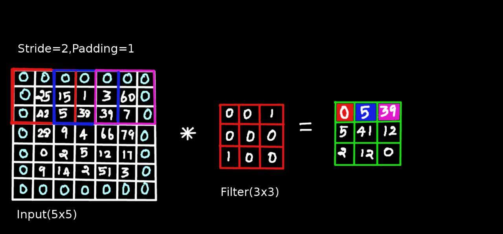

Convolutional Neural Networks
WHAT IS CONVOLUTIONAL NEURAL NETWORK

Convolutional Neural Network is an advanced neural network. CNN helps to detect objects of an images and various position in images. CNN's are one of the most popular categories of neural networks, especially for high-dimensional data (e.g., images and videos). The neural network uses convolution and pooling layer is known as a convolutional neural network. A CNN network consists of multiple Conv-Pool layers cascaded. This helps CNN to perform image classification by looking for low-level features such as edges and curves, and then building up to more abstract concepts through a series of convolutional layers. The more the number of Conv-Pool layers, the deeper the network gets. Deeper networks are shown to learn features hierarchically like : Objects -> Shapes -> Curves.
For instance, the first layer might detect edges and curves in the image, the second layer might detect object body-parts(e.g., hands or paws or ears), the third layer might detect the whole object, etc
WHAT ARE FEATURES AND CLASSIFIERS
Feature extraction and classification are two key stages of a typical computer vision system. A feature is any distinctive aspect or characteristic(like fur in cats or longer ears in dogs) which is used to solve a computational task related to a certain application.The task of the classifier is to use the feature vector to place an image (or in more complex tasks, a particular region) into a category.
Difficult tasks require richer feature representation. It is difficult to detect a cat than detecting a digit.

LAYERS:
A CNN is composed of several basic building blocks, called the CNN layers.
CONVOLUTIONAL LAYERS
A convolutional layer is the most important component of a CNN. It comprises a set of filters (also called convolutional kernels) which are convolved with a given input to generate an output feature map.

Now, the infamous way to explain a convolution layer is to imagine a flashlight that is shining over the top left of the image. Let's say that the light this flashlight shines covers a 5 x 5 area. And now, let's imagine this flashlight sliding across all the areas of the input image. In machine learning terms, this flashlight is called a filter/kernel and the region that it is shining over is called the receptive field.
In this layer, we extract the features from input by filters. each convolutional layer we need to specify the number of filters. Each filter is meant to learn distinct feature. For example, if a cat could be sitting in different pose and the CNN would still able to recognize the cat in various cat images.
In case of 2D convolution each filter is a matrix. As an example 3x3 Given a 2D input feature map and a convolution filter of matrix sizes 5x5 and 3x3, respectively, a convolution layer multiplies the 3x3 filter with a highlighted patch (also 3x3) of the input feature map and sums up all values to generate one value in the output feature map. The filter slides along the width and height of the input feature map and this process continues until the filter can no longer slide further.

Stride:
Stride (S) means while scanning features from horizontally and vertically on image how many steps you want to skip, which can be set to a different (than 1) value if required. The computations performed at each step, as the filter is slid onto the input feature map to compute the corresponding value in the output feature map. The 3x3 filter is multiplied with the same sized region within a 5x5 input feature map and the resulting values are summed up to obtain a corresponding entry in the output feature map at each convolution.When the stride is 1 then we move the filters one pixel at a time. When the stride is 2 (or uncommonly 3 or more, though this is rare in practice) then the filters jump 2 pixels at a time as we slide them around. This will produce smaller output volumes spatially. The stride of 2 results in a smaller output feature map. This reduction in dimensions is referred to as the sub-sampling operation.
Such a reduction in dimensions provides moderate invariance to scale and pose of the objects, that the spatial size of the output feature map is reduced compared to the input feature map. Since Max-Pool layers takes care of this, we rarely use strides of size more than one.

Zero-Padding:
In convolutional neural networks, zero-padding refers to surrounding a matrix with zeros. This can help preserve features that exist at the edges of the original matrix and control the size of the output feature map. It will allow us to control the spatial size of the output volumes.we will use it to exactly preserve the spatial size of the input volume so the input and output width and height are the same. The computations that are performed at each step, as the filter is slid onto the input feature map to compute the corresponding value of the output feature map. The 3x3 filter is multiplied with the same sized region within a 7x7 input feature map (including zero-padding) and the resulting values are summed up to obtain a corresponding entry in the output feature map at each h x w and a stride length s, the output feature dimensions are given by

if we have 5x5 input image and 3x3 filter we will end up an output is 3x3.we want preserve original size of an image, we use 7x7 input image by adding zeros. The basic idea is to increase the size of the input feature map such that an output feature map, with desired dimensions, is obtained.
If p denotes the increase in the input feature map along with each dimension (by padding zeros), we can represent the modified output feature map dimensions as follows:

The following picture shows output(3x3) and input(5x5) with zero padding=1 and stride=2,
If the convolutional layers were to not zero-pad the inputs and apply only valid convolutions, then the spatial size of the output features will be reduced by a small factor after each convolution layer and the information at the borders will be "washed away" too quickly.
RECEPTIVE FIELD:
In computer vision, the inputs are of very high dimensions (e.g., images and videos) and are required to be efficiently processed through large-scale CNN models. Therefore, instead of defining convolutional filters that are equal to the spatial size of the inputs, we define them to be of a significantly smaller size compared to the input images (e.g., in practice 3x3, 5x5, and 7x7 filters are used to process images with sizes such as 110 x110, 224 x 224, and even larger)
This design provides two key benefits: (a) the number of learn-able parameters are greatly reduced when smaller sized kernels are used; and (b) small-sized filters ensure that distinctive patterns are learned from the local regions corresponding to, e.g., different object parts in an image. The size (height and width) of the filter which defines the spatial extent of a region, which a filter can modify at each convolution step, is called the "receptive field" of the filter.
Activation Layer:
A nonlinear function can be understood as a switching or a selection mechanism, which decides whether a neuron will fire or not given all of its inputs. The activation layer controls how the signal flows from one layer to the next, emulating how neurons are fired in our brain. It used to increase non-linearity of the network without affecting receptive fields of convolution layers. Every activation function takes a single number and performs a certain fixed mathematical operation on it.
There are several activation functions you may encounter in practice:
Sigmoid: Probability of anything between 0 to 1, so mainly its used to predicts the probability as an output.
tanh: It takes a real-valued input and squashes it to the range [-1, 1] .Mainly used for classification between two classes.
ReLU: ReLU stands for Rectified Linear Unit. It takes a real-valued input and thresholds it at zero (replaces all negative values with zero)
MAX-POOLING LAYER:
The pooling layer operates independently on every depth slice of the input and resizes it spatially, using the MAX operation. Inputs from the convolutions layer can be smoothened to reduce noise and distortion. From the given array, it will take only maximum value than other values. Why we select maximum value, If this value (high intensity of pixel ) is related to our expected output then we can make sure that where our features are detected. This layer reduces computation an overfitting of parameters. A pooling layer operates on blocks of the input feature map and combines the feature activations. Similar to the convolution layer, we need to specify the size of the pooled region and the stride.
The figure shows the max pooling operation, where the maximum activation is chosen from the selected block of values. This window is slided across the input feature maps with a step size defined by the stride. If the size of the pooled region is given by
f x f , with a stride s, the size of the output feature map is

FULLY CONNECTED LAYER:
The usual feed-forward layer is used at the end of the entire network. Think of it like this. CNN layers extract important features and the fully-connected layers used this features to classify the input. Fully connected layers correspond essentially to convolution layers with filters of size 1 x 1. Each unit in a fully connected layer is densely connected to all the units of the previous layer.

The input from the other layers is flattened and sent so as the transform the output into the number of classes as desired by the network. Soft-max activation is used to assign confidence to each of the classes.
SOFT-MAX FUNCTION:
This is a special kind of activation layer. We will get lots of output values for a set of images. Now we are going to apply soft-max on these value and it produces discrete probability vectors. It is special in the sense, the output for a particular neuron also depends upon every neuron in the layer.

The output then is used to calculate the loss and back-propagation is employed to train the network.
LOSS:
This layer uses a "loss function," also called the "objective function," to estimate the quality of predictions made by the network on the training data, for which the actual labels are known. A loss function quantifies the difference between the estimated output of the model (the prediction) and the correct output (the ground truth).
CROSS-ENTROPY LOSS:
The cross-entropy loss (also termed "log loss" and "soft-max loss") is defined as follows:

where y denotes the desired output and p is the probability for each output category. There is a total of N neurons in the output layer. The probability of each class can be calculated using a soft-max function. Due to the form of the normalizing function in the loss, this loss is also called the soft-max loss.
The overall Structure of CNN is following,

To understand this clearly, we can take a sample image,
Input: An input image we are giving is to be 32x32x3.
Conv: If we using 12 filters. Then it will be 32x32x12
RELU: It will apply an elementwise activation function, such as max(0,x) thresholds at zero. This leaves the size of the volume unchanged (32x32x12).
POOL: Reducing spatial size such as 16x16x12.
FC: It will compute the class score, resulting in size [1x1x10] where each of the 10 numbers corresponds to class score.
The more convolution layers we use, we will get a high level of features. Several convolutions and pooling layers are added before the prediction is made. The fully connected layer, all the neurons are connected to the next layer. Then we apply the softmax function to obtain the probability of which class the output respects to. Finally, we can get a value E.g whether it is a dog or a cat.
Why can we not use typical NN instead of CNN?
Even for little variation in the shape of images, the feed-forward network will unable to recognize images.
Local connectivity:
Each neuron in the convolutional layer is connected only to a local region in the input volume spatially but to the full depth. Each hidden units is connected only to the subregion of an input image. If we have fully connected hidden layer we would have an unmanageable number of parameters and increase so many hidden units. It leads to a memory problem.
Though we mentioned that we use filters of small sizes, because of the hierarchical nature of CNN, the layers that learn higher level features are essentially able to see larger pieces of the input.